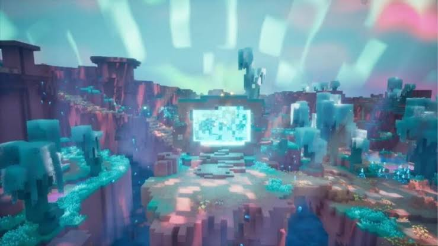

Notícia principal
Mojang anuncia nova dimensão "The Shift" para o Minecraft:
A dimensão The Sift vai fazer sua estreia em Minecraft Dungeons 2, a continuação do RPG de ação que se passa no universo do game, com lançamento marcado para 29 de setembro.
Mas as novidades não ficaram restritas ao novo jogo, e já foi confirmado que no ano que vem The Sift chega também para as edições Java e Bedrock no formato clássico do game.
O anúncio de The Sift foi feito em uma Minecraft LIVE, e a CEO atual do Xbox, Asha Sharma, aproveitou o momento para publicar em redes sociais uma métrica importante do game. Segundo a executiva, a cada dia mais de 300.000 jogadores experimentam o jogo pela primeira vez, em média.

Anúncio oficial
O que é: Será a quarta dimensão oficial do jogo (juntando-se ao Overworld, Nether e End)
Estreia primeiro no Minecraft Dungeons II (em 29 de setembro de 2026).
Com chegada confirmada para as edições Java e Bedrock do Minecraft tradicional em 2027.